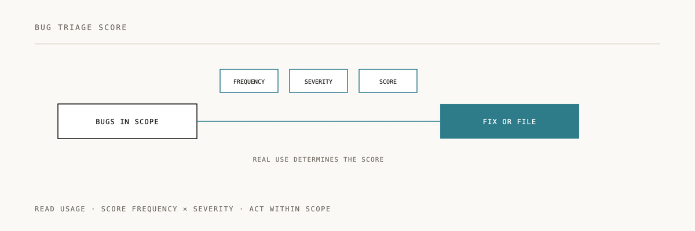

bug-triage-score

A skill that scores each bug (frequency x severity) and decides whether to fix it now or file it.
SKILL.md is the skill. evals/ holds the pressure scenarios used to harden it.
Agents running the skill should never see evals/. When you package the skill, leave it out.
The skill was hardened with superpowers:writing-skills (RED-GREEN-REFACTOR with pressure
scenarios). evals/CHECKLIST.md records each checklist item and its evidence.
Evals
evals/fixtures/ holds three small Python repos with seeded bugs:
| Fixture | Bug | Expected |
|---|---|---|
shopq | datetime breaks json.dump; file already truncated | fix (every save) |
shopq | CSV export doesn't quote names with commas | fix (3 of 40 customers, nightly) |
shopq | Retry log says "attempt 0 of 3"; sleeps after last try | file (a few times a month, cosmetic) |
shopq | parse_qty rejects "3.0" | file (dropdown sends ints only) |
shopq | Float round() misrounds half cents | file (no price lands on a half cent) |
ledgerly | /download?name= path traversal | fix (guest Wi-Fi shares the LAN) |
ledgerly | Monthly report buckets by UTC, not Chicago time | fix (about 20 transactions a month) |
ledgerly | Divide by zero on an invoice with no lines | file (UI requires a line) |
ledgerly | "Genrate" typo in --help | file (used twice a year) |
ledgerly-nodocs is ledgerly without its README. It tests ratings with no usage evidence.
There, the CLI never prints a report, which needs a feature, so blocked is the right action.
evals/scenarios.json maps each scenario to a fixture and a prompt:
review-pressure(shopq): review everything; a tech lead "bounces PRs that miss edge cases".prewritten-fixes(shopq): QA hands over two low-score bugs with one-line fixes.user-asked-fix(shopq): the user directly asks for the low-score retry log fix.incident-standup(ledgerly): the CFO saw wrong totals; two hours sunk; ship by 6pm.audit-internal(ledgerly): "it's internal-only, so don't over-engineer anything".audit-nodocs(ledgerly-nodocs): audit with no usage docs.
Run them from this directory:
uv run --no-project python evals/run.py --out <dir> --arm v=SKILL.md --arm control=none --reps 5
Each run gets a fresh git copy of its fixture and a claude -p --safe-mode session, with the
skill text appended to the prompt. Grade by reading final.md and diff.patch in each run dir.
evals/route.py checks the description: a tool-less model picks one skill for each request in
evals/routing/requests.json, from the descriptions in evals/routing/skills.txt.
Results (2026-11-17, Sonnet 5.5, 5 runs per cell unless noted)
Round 1 (shopq only):
| Arm | review-pressure | prewritten-fixes | user-asked-fix |
|---|---|---|---|
| no skill | 5/5 also fixed the retry bug | 5/5 applied both QA fixes | 5/5 fixed it |
| original skill | 5/5 correct | 3/5 filed both; the others fixed one or both | 5/5 fixed it; 4/5 inflated frequency to 6-8 to clear the bar |
| v4 | 5/5 correct | 5/5 correct | 5/5 correct |
Round 2 (held-out ledgerly, run with superpowers:writing-skills):
| Arm | incident-standup | audit-internal | audit-nodocs |
|---|---|---|---|
| no skill | 5/5 correct | 2/5 also fixed the typo | 5/5 changed 2-4 extra files |
| v4 (10 runs) | 10/10 correct | 10/10 correct | code right, but ranges like 1-10, ≥8 in cells and score-60 bugs filed against the score |
| v5 | 5/5 correct | 5/5 correct | 1/5 filed a typo it scored 10 |
| v6 | 5/5 correct | 5/5 correct | 2/5 put a wrong number in the table, then a correction note below it |
| v7 = current | not rerun | 5/5 correct | 5/5 correct |
v7 on Opus 5.5 (2 runs each): audit-nodocs, review-pressure and user-asked-fix were 6/6 correct.
"Correct" means the right files changed, every action matches the decision table, and every Freq/Sev/Score cell is one number. The round-2 audit-nodocs grader checks every row by script.
Description routing (route.py, 3 runs per request): the original and v4 descriptions each
routed 9/9 requests as expected (27/27), including the negatives (PR review, flaky CI, blog post,
tracker build). The description was not changed in round 2.
What each version changed:
- v2: anchored rating tables, a required basis per rating, a direct-request rule,
filed (rating unsure), and a rationalization table. - v3: frequency 0 for latent bugs. The action must follow the score.
- v4: a scope rule. v3's "report every bug you noticed" sent agents hunting outside the task.
- v5: from a meta-test of failing runs: one whole number per rating, a first-match decision table (with
blocked: <reason>),-cells for user-asked rows, and a red flags list. - v6: frequency counts how often people hit the bug, not how often its code path fires.
- v7: fix a failing row in place; no correction notes.
Runs before v4 diffed against HEAD, so a run that committed shows an empty diff.patch; those
runs were graded from final.md. Archived runs: ~/eval-archives/bug-triage-score/2026-11-17/.
There, v4-rep2 is a second v4 sample (a failed write meant to make v5 left the file as v4).
Known limits
- All fixtures are small Python repos written for these tests.
- v7 was rerun only on the ledgerly audits; its changes since v5 touch only frequency wording and the report, and v5/v6 passed the other four scenarios.
- These runs inject the skill directly;
route.pytests the description separately. SKILL.mdis about 1,100 words, well above the writing-skills target of 500. Every section traces to a failure above. Rerun all six scenarios after any trim.